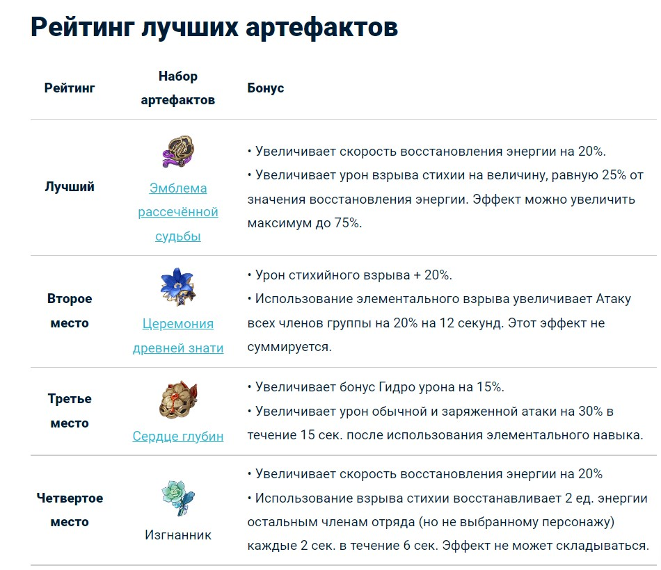
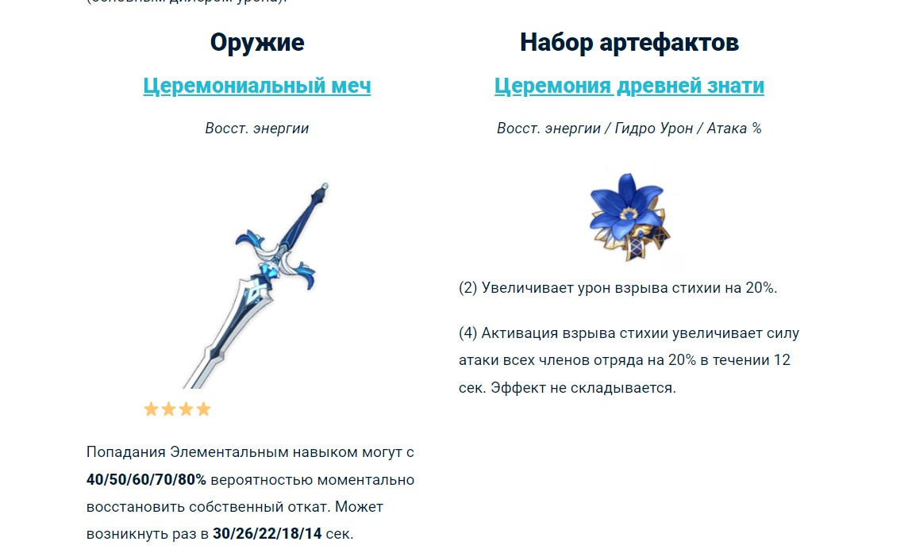

Син Цю — играбельный ⭐️⭐️⭐️⭐️ персонаж, являющийся гуру школы боевого стиля Гухуа и известным любителем книг. Билд героя чаще всего строится на позиции апликатора или реактора, близкого к второстепенному DPS. В бою помимо Гидро стихии использует меч. Универсальные элементальные способности позволяют внести Син Цю в высшие ранги тир-листа.
Син Цю лучше всего раскрывается в позиции второстепенного дд/саппорта за счет механики своих способностей, позволяющих наносить урон даже если герой не на поле боя. Из ключевых характеристик выделим:
Силу атаки, криты и бонус элементального урона, поскольку при активации взрыва стихии урон мечей зависит от статов самого мечника. Также одним из основных показателей является восстановление энергии, так как взрыв стихии Син Цю достаточно дорогой — 80 единиц. HP хотя и имеет место для большего исцеления по окончании действия элементального скилла, но максимизировать данный стат не целесообразно, поскольку полноценного целителя он все равно не заменит. Мастерство стихий стоит собирать, только если Син Цю занимает позицию реактора, то есть закрывает реакции. Таким образом, характеристики, которые рекомендуется искать в оружии и артефактах Син Цю:
